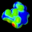
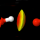
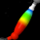

Visualisation des contacts entre molécules
Ces commandes mettent en évidence les contacts établis entre une molécule de la maille centrale et les molécules voisines.
Les molécules voisines sont affichées en transparence de façon à mieux visualiser les zones de contact.
Trois modes de représentation sont proposés :
-  Surface de Van der Walls : une surface est appliquée sur la molécule. La surface est colorée en fonction de la proximité
des molécules voisines (rouge : très proches ; bleu : lointaines)
- Zones de contact : une lentille correspondant à l'intersection des sphères des atomes des molécules voisines avec la molécule étudiée. L'intensité du dégradé de couleurs est un indicateur de l'étroitesse du contact
- Connexions : un "cigare" matérialise la liaison entre les atomes. La section de cette connexion est proportionnelle à la proximité entre les atomes
Les contacts correspondent à des interactions non covalentes entre molécules. Ils peuvent être dus à des liaisons hydrogène
mais aussi à d'autres types d'interactions (hydrophobes, etc...).